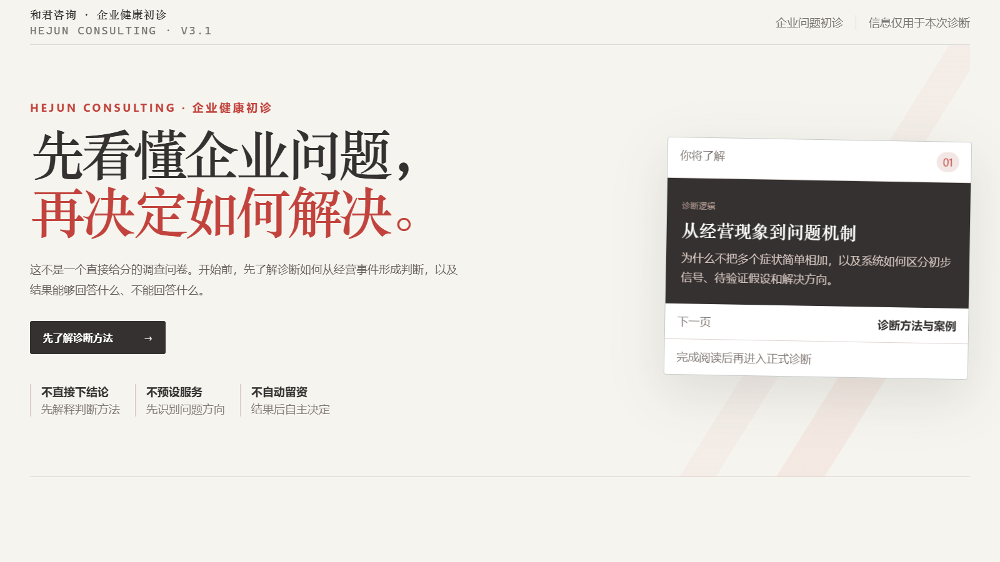
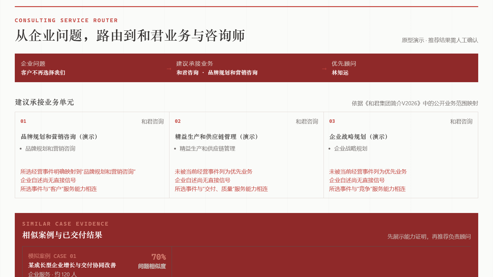
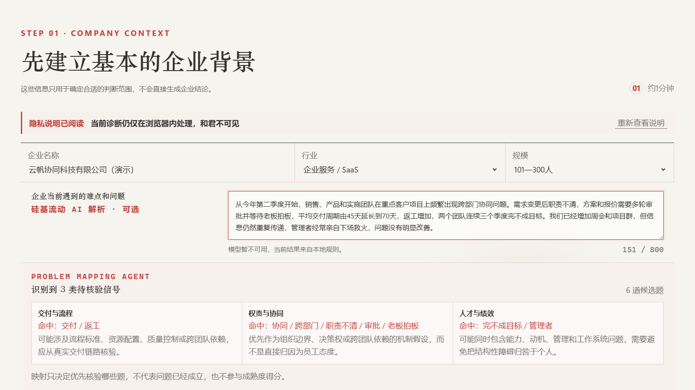
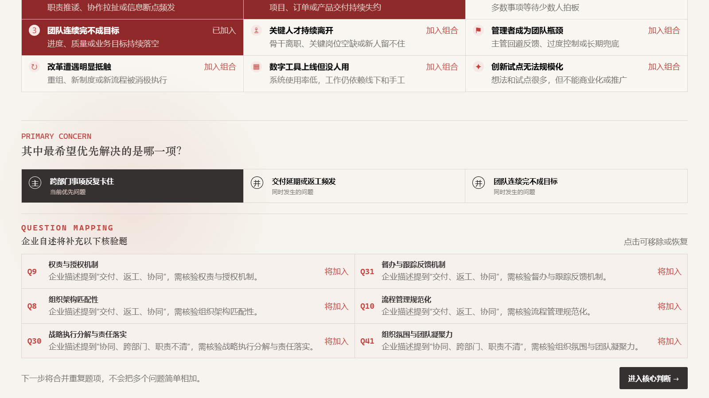
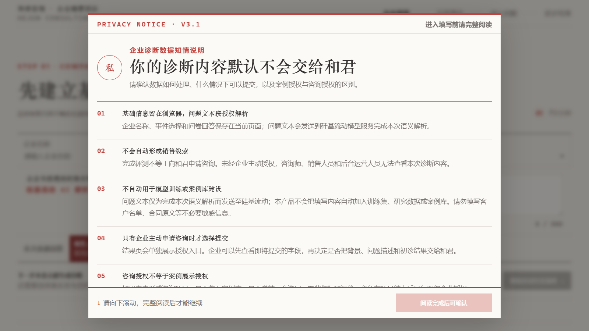
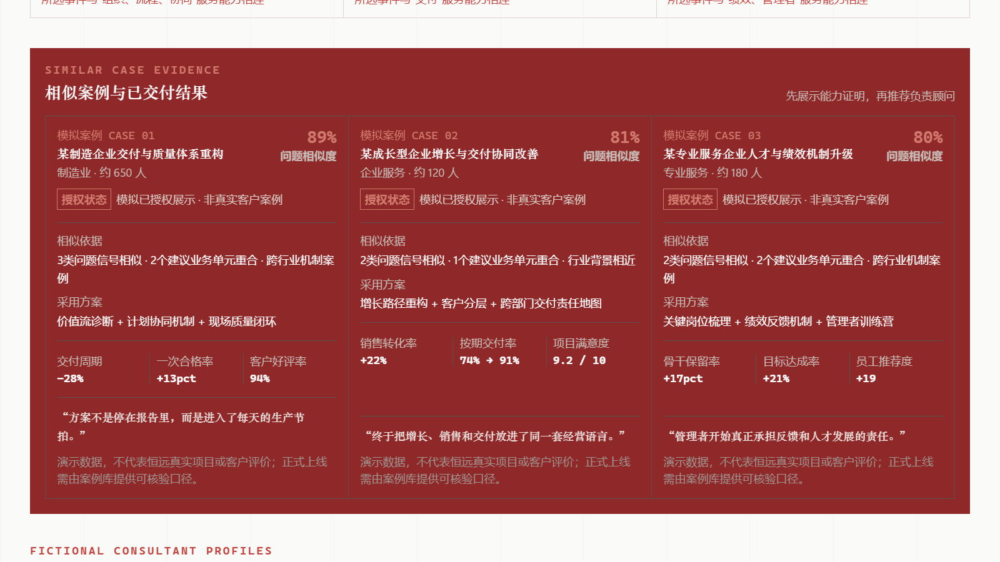
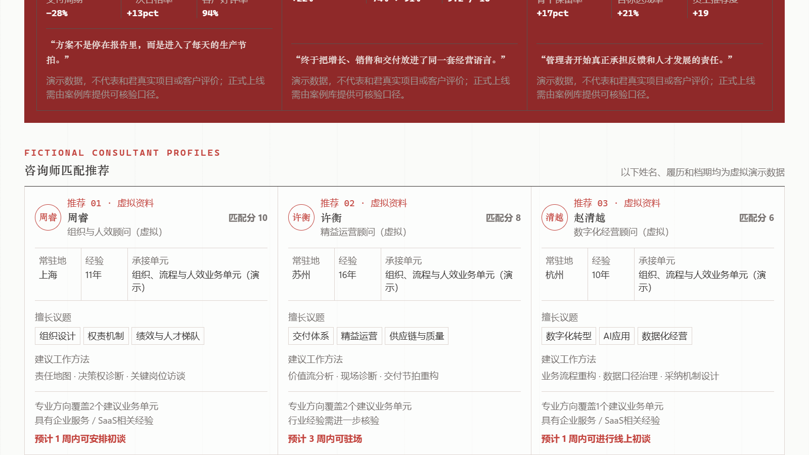
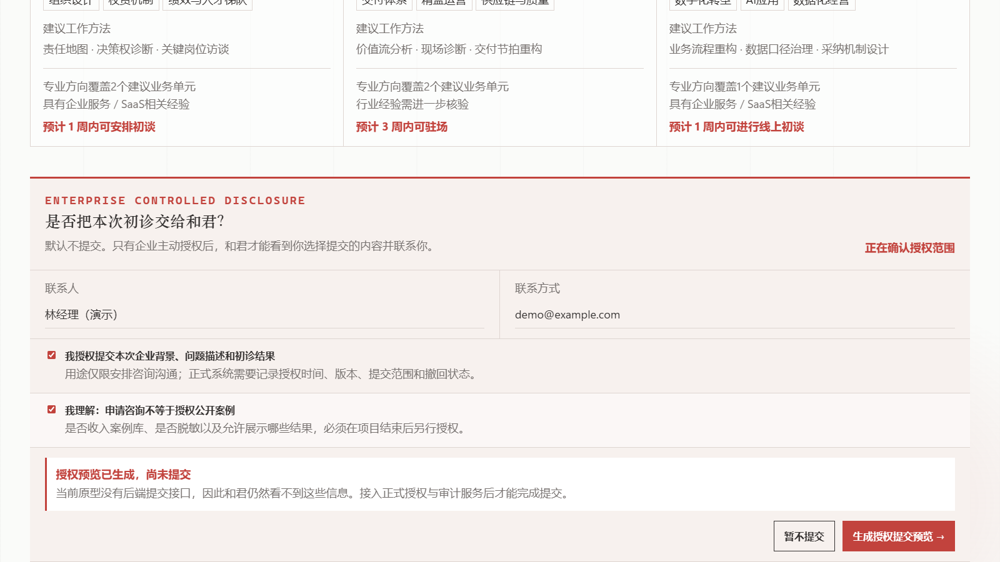

数字化一份问卷
把 Excel 搬到网页、自动计算分数，再输出一份企业健康报告。
企业级咨询 Agent · 产品与 AI 架构
面对咨询公司“将零散经验与企业知识转化为可复用 AI 能力”的需求，我以一份企业健康自测 Excel 为验证场景，设计了从问题表达、证据核验到业务与专家路由的完整链路。
01 · BUSINESS REFRAMING
把 Excel 搬到网页、自动计算分数，再输出一份企业健康报告。
帮助企业说清问题、形成可核验假设，并路由到案例、专业 Agent、业务单元和真人咨询师。
如果原始问卷存在偏差，直接把分数转换成服务推荐，只会把偏差自动化。问卷因此被重新定位为 企业自述之后的定向核验工具，而不是最终诊断依据。
产品入口
首页不直接抛出长问卷，而是解释结果能回答什么、不能回答什么，让用户先建立正确预期。

02 · DIAGNOSTIC ROUTING
企业自述只形成风险信号和待核验假设；信息不足时系统保留不确定性，高风险或跨领域问题升级给真人咨询师。
ROUTING GROUND TRUTH

提取事件、时间、影响、角色和已采取措施，并解释为什么映射到相关核验题。

最多选择三个并发事件，再明确当前最希望优先解决的问题。

企业完整阅读后才能填写；诊断、咨询、案例和训练授权相互独立。

03 · TRUST BEFORE CONVERSION


当前案例、咨询师、相似度和结果指标均为模拟演示数据，不代表和君真实客户、项目或履历。
04 · ENTERPRISE AGENT ORGANIZATION
05 · TWO EVIDENCE LOOPS
06 · CURRENT DELIVERY

AI ARCHITECTURE IS BUSINESS ARCHITECTURE